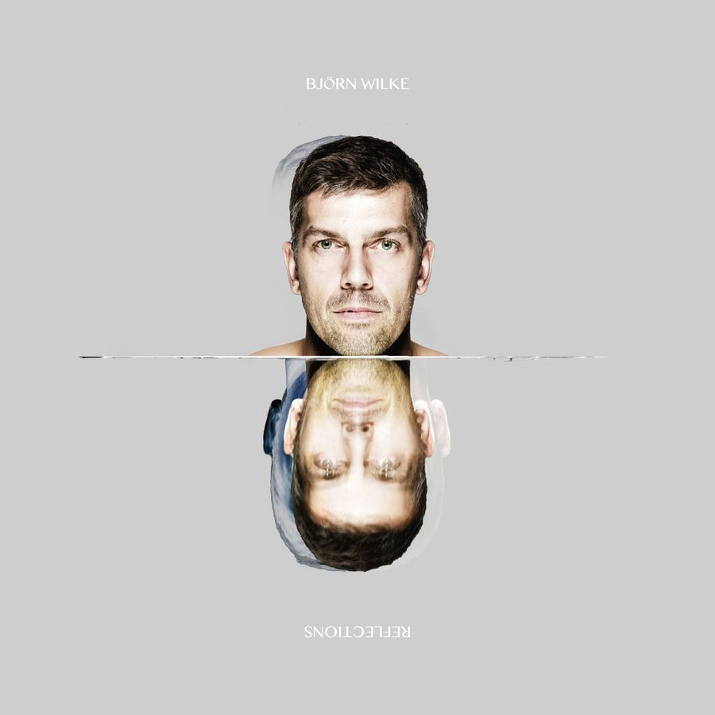

Bjorn Wilke: Getting nasty in the Cave


Bjorn Wilke: you might know him as one of Germany’s top DJ/producers, with a residency at Space Ibiza behind him and with releases on Level Non Zero, MBF, Session Deluxe, Hypnotic, Hablando and more. But you might not know that for the next little while, he’s made Sydney his home.
With a bi-monthly resident at the much-loved Chinese Laundry, he’s, got a blinder planned for this Saturday: he’ll be tearing up the Cave alongside UNKLE frontman James Lavelle. ITM caught up with the 31-year old German to have a chat about the gig this weekend, what else he’s got on the boil while he’s in Australia.
Hello Björn and first of all: welcome to Australia! You are now living here. How do you like it and do you miss Europe?
Thank you very much! Yes, we came here 3 months ago and we are planned to stay at least 1 year, but with the foundation of my Australian company it looks like we are extending our stay here. We fell in love with Australia, the climate, the food, the people and the beaches. I go to Europe to play gigs every 6-8 weeks, so I don’t miss it that much and I still have an apartment and a company there, so we are not completely disconnected to our home country and friends and family there.
You are travelling back and forth between Australia and Europe every 6-8 weeks?
Yes, at least 8 times per year, plus travels to other countries and continents. I love travelling – and I like to collect miles (laughs).
When did you get into electronic music and what is typical for your sets?
I started listening to electronic music by the age of 15, when I was going out in Germany to listen to guys like Sven Väth, Pascal FEOS and DJ Dag. I started playing records by the age of 16 in 1993, and I still love it. Typical? Hmmm, I love to play long sets to tell a story. I do events in Germany with sets up to 10 hours. Unfortunately the average time slot in Australia is 2-3 hours. I also try to put a hypnotic note in my sets with continuous rolling grooves and strong baselines. Well, as most of the DJs out there I try to tell my own story and to create a unique feeling on the floor.
Can you tell us something about your new Kaato agency based in Sydney?
Sure. Kaato is our musical platform here in Australia. We use it as an artist agency to bring some of the brightest names in electronic music to Australia. At the moment we have Ricardo Villalobos, Pascal FEOS, Tobi Neumann, Monika Kruse, Karotte, Onur Özer and more on our roster, which is steadily growing – but not more than 12 acts. Our aim is to build tours throughout Australia, New Zealand and South East Asia for these guys and to represent them properly for the market here. On the other end we have an inhouse music label, which will be launched at the end of February with its first release, produced by myself. We are also working on a compilation for the Australian market to introduce our musical focus and ourselves – I hope this one will be released in March. The next step will be clothing and events, the two other branches of Kaato. So there is a lot to do, I guess.
What can we expect from the production side of Björn Wilke?
A remix of Jeff Bennett’s Sediment will be released on Kung Fu Dub, a co-production with Cocoon’s Cess will soon be released on Fafa Monteco’s label Hypnotic as well as the Kaato Music release number one, which is already supported by Loco Dice, Pascal and many more guys around the world. We can’t wait to launch Kaato Music. Another important release is my digital remix album, which contains collected remixes of Jimmy Somerville, Chicken Lips and more, all produced during the last 5 years. It will also contain 2 exclusive new remixes for Jeff Bennett and Mark Keim and be available on dancemusichub.com, a 100% Australian music platform. So it’s more or less an exclusive present to the Australian crowd for the warm welcome (he smiles). It will be released on BW-Music, my German label.
What you think about the digital music industry?
I totally accept it and I think it is just the way it is now. I use Rane Serato Scratch using turntables and a MacBook, and I don’t want to miss checking my promos online, downloading tracks last minute in the hotel room, browsing my box in a plane and promoting my own productions with a click on my mouse. This way you can distribute your music worldwide in seconds and it helps you to introduce yourself to a worldwide audience. Without this revolution I would not be able to live in Australia, because it would take a lifetime to get the records mailed to our house. This way I only need my fast DSL connection and I am always up to date, wherever I am. That’s just wonderful, and it turns the world into a village.
You will play the Laundry’s cave this Saturday with James Lavelle. What can we expect?
Well, as James is a very popular man in the UK and Australia, we can expect a hot cave with an energetic crowd, that’s for sure. I will bring in my rolling tech house sound and finish the night with a late night set. The crowd at the cave is always great and open-minded. We are always having a great time and lots of energy in the Laundry’s cave.
Thanks for you time Björn!
No worries mate!
You can catch Bjorn Wilke playing alongside James Lavelle in The Cave at Chinese Laundry this Saturday, and to get you in the mood check out his mix for ITM FM.